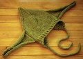

|
||
Premium Patterns Wintry Mix Mitts Love Bytes HawkeyeFree Patterns Kiddie Cadet Summerlin Ruffled Scarf Seamless DS Sock Simply Seamless Pouch Myriads of MushroomsExtras DIY Mitten Blocker Felt Patch Tutorial Yarn Dyeing Tutorial Needle Pouches Knitting Journal |
July 07, 2008 - Posted by Grace SchneblyKnit you I can, yes.I hope you all had a great 4th of July weekend, and for everyone not in the US hopefully you got a break from work and had some nice weather! I don't know if any of you have seen Boston's fireworks show, but it is really pretty awesome. This year, since we're in Quincy, we walked just down the street to Wollaston beach and were actually able to see the show pretty well! Si took some pictures, and I couldn't help but share at least one shot. Project Specs This hat is the perfect gift for the nerdlet in your life! Our oldest sister and brother in law are rather serious geeks, so I knew that they would be the perfect people to appreciate this cap. I personally am not a huge fan of Star Wars, but even I think this hat turned out pretty darn cute and can't wait to see Jojo to try it on. However I should state that I am a terrible aunt since I still haven't sent out the banana slug that I made for her birthday! I made this hat as a little something extra in hopes that she won't hold it against me when she gets older. :) I couldn't believe how quickly this cap knit up; you could easily finish all the knitting in one day. Also the pattern is so simple it would be great for a beginning knitter. The body of hat is knit in the round, and it's pre-felted shape looks kind of like the Meathead hat by Larissa Brown. The ears are knit separately and are easily whip stitched into place. I placed the Yoda ears directly under the decrease lines on either side of the hat, and it worked out perfectly. I used anny purl's instruction for adding earflaps, by picking up 15 stitches along the cast on edge below each Yoda ear, working garter stitch decreasing at both ends every other row three times, then decreasing at both ends every row until 3 stitches remain. I did not center the earflaps directly under the Yoda ears though, because they looked too far forward. Instead I picked up 5 stitches to the front and 10 stitches to the back of the Yoda ear. I also worked the garter stitch in all purl stitches to create a better flow from the hat to the earflap. If you work the garter stitch in the usual all knit manner, you could end up with a valley between the edge of the hat and the earflap. For the i-cord ties I worked 12 inches before binding off. I put off stiffening the ears for a while after felting because I was worried about not getting the correct ratio of Elmer's Glue to water and end up with a ear that was either rock hard or limp. It was easier than I had thought though, just make sure that your mixture is pretty milky. I don't remember the exact ratio of water to glue that I used, but the mixture seems to be pretty forgiving. My ears are still a bit floppy because I guess I didn't soak it close enough to the ear/hat joint, but I think it is still cute. I also couldn't figure out a good way to add wrinkles to the forehead. I tried a few things before and after felting but nothing stuck. Oh well I guess baby Yoda's aren't supposed to have wrinkles.
|
   Recent ReviewsRecent Posts
 Our Favorites
|
| © 2007 KathrynIvy.com | ||

{kind=link}
{kind=link}
{kind=link}